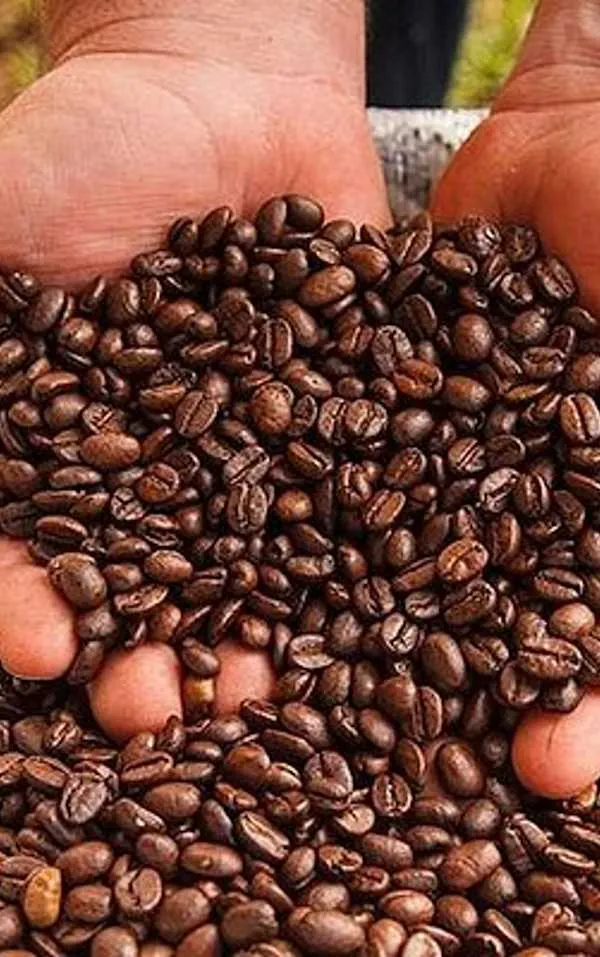
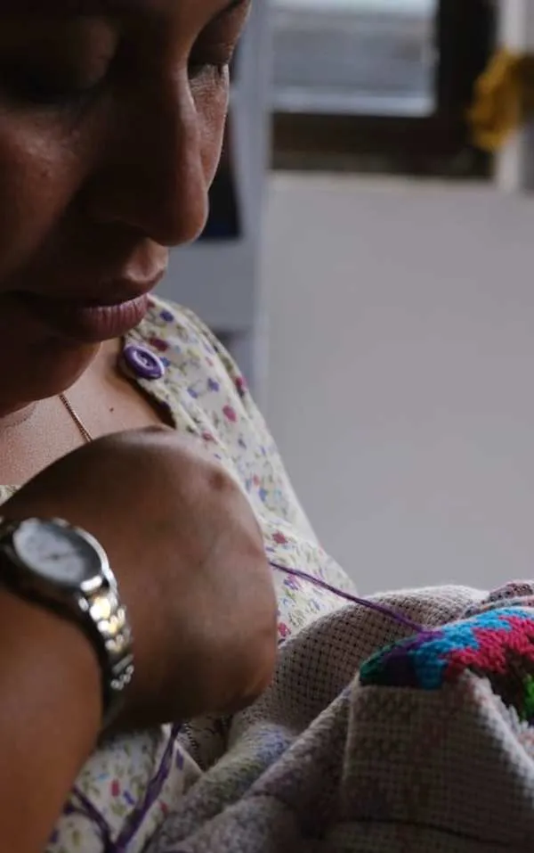

SAN JUAN LA LAGUNA · GUATEMALA
Encuentra
tu elemento.
Un pequeño refugio para descansar,
compartir y conectar con lo que importa.
Cultura viva. Naturaleza. Conexión.Descubre 4 Elementos
△ Tierra≋ Agua☼ Fuego〰 Aire
UN LUGAR PARA SENTIRTE PARTE
Hay viajes que
se quedan contigo.
Ven con curiosidad. Baja el ritmo. Deja espacio para una conversación inesperada y para conocer San Juan desde cerca.
Somos un hostal pequeño con espíritu comunitario. Aquí, los detalles hechos por artesanos de Atitlán y el intercambio cultural dan sentido a tu estancia.
Conoce nuestra forma de viajar

Nuestra visión
Viajar también
es cuidar.
Apoyamos a productores y comerciantes locales, cuidamos los saberes ancestrales y respetamos la tierra y a quienes la habitan. Buscamos un turismo que no gentrifique y que haga posibles intercambios genuinos.
Descubre Red Nephila ↗DESCANSA A TU MANERA
Tu rincón en San Juan.
Agua, Fuego y Tierra: tres habitaciones,
dos dormitorios compartidos y una privada.
UN ESPACIO PARA TI
Habitación
privada
Cama doble para disfrutar
de tu propio espacio.
Wi-Fi gratuitoDuchas calientesRopa de camaTé y caféAgua potable
SAL A DESCUBRIR
Conecta con el lugar.
Y con su gente.

Historias entre hilos
Tejido, bordado y tintes naturales con mujeres de la comunidad.
El lago desde otra mirada
Caminatas al Rostro Maya y kayak para explorar Atitlán.
Compartir sabe mejor
Cocina tradicional y cenas compartidas. Consulta actividades y disponibilidad con el equipo.
EVENTOS DEL HOSTAL Y DAYTRIPS
Experiencias para compartir.
Actividades de 4 Elementos y la comunidad local. Abre cada ficha para ver horarios, precios y detalles. Confirma disponibilidad y precio total con el equipo antes de asistir.

SAN JUAN LA LAGUNA · 2 h
Cocina guatemalteca
Q175 / persona
Ver toda la información
Prepara platos tradicionales con una familia local, descubre ingredientes de San Juan y comparte historias alrededor de la comida.
- Horario
- Todos los días; horario adaptable.
- Duración
- 2 h
- Pago
- Solo efectivo. Para 2 o más: Q150 por persona.
SAN JUAN LA LAGUNA · 3 h 20 min
Amanecer en Rostro Maya
Q150 / persona
Ver toda la información
Contempla el amanecer sobre Atitlán y sus volcanes. Traslado de San Juan a Santa Clara y caminata de 30–45 minutos hasta el mirador. Incluye transporte, guía local, entrada y bebida caliente en la cima.
- Horario
- Todos los días. Salida 04:00 desde 4 Elementos Hostal; regreso 07:20.
- Duración
- 3 h 20 min
- Pago
- Solo efectivo.

SAN JUAN LA LAGUNA · 2 h
Tejido con mujeres Tzutujiles
Q175 / persona
Ver toda la información
Aprende a tejer con mujeres de San Juan y conoce las tradiciones ancestrales que transmiten a través de sus manos, historias e hilos.
- Horario
- Todos los días; horario adaptable.
- Duración
- 2 h
- Pago
- Solo efectivo. Para 2 o más: Q150 por persona.
Cancelación o reprogramación: con 48 horas de anticipación.
Consultar al hostal ↗
SAN JUAN LA LAGUNA · 2 h
Macramé y montaña
Q175 / persona
Ver toda la información
Aprende los nudos básicos paso a paso, comparte un momento creativo en buena compañía y llévate tu propia pieza hecha a mano.
- Horario
- Todos los días; horario adaptable.
- Duración
- 2 h
- Pago
- Solo efectivo. Para 2 o más: Q150 por persona.

SAN JUAN LA LAGUNA · 2 h 30 min
Recorrido cultural de San Juan
Q175 / persona
Ver toda la información
Explora los murales, el arte y los sabores del pueblo. Conoce las tradiciones del cacao, el tejido y la producción de miel.
- Horario
- Martes y viernes a las 10:00.
- Duración
- 2 h 30 min
- Pago
- Solo efectivo. Para 2 o más: Q150 por persona.

SAN JUAN LA LAGUNA · 1 h
Tour del café
Q150 / persona
Ver toda la información
Conoce a agricultores locales y sus métodos tradicionales y orgánicos. Sigue el proceso del grano al tueste y termina con una degustación guiada de café artesanal.
- Horario
- Todos los días; horario adaptable.
- Duración
- 1 h
- Pago
- Solo efectivo.
Cancelación o reprogramación: con 48 horas de anticipación.
Consultar al hostal ↗
SAN JUAN LA LAGUNA · 2 h
Tortillas con nuestras vecinas
Q175 / persona
Ver toda la información
Prepara tortillas desde cero con las mujeres del vecindario. Aprende técnicas tradicionales y comparte una experiencia cercana a la vida cotidiana de San Juan.
- Horario
- Todos los días a las 14:00; horario adaptable.
- Duración
- 2 h
- Pago
- Solo efectivo. Para 2 o más: Q150 por persona.

SAN JUAN LA LAGUNA · 2 h
Bordado tradicional
Q175 / persona
Ver toda la información
Aprende técnicas básicas con artesanas locales como Helena, portadoras de un oficio transmitido entre generaciones. Crea un diseño propio y personaliza tu ropa.
- Horario
- Todos los días a las 14:00; horario adaptable.
- Duración
- 2 h
- Pago
- Solo efectivo. Para 2 o más: Q150 por persona.
ASÍ SE SIENTE ESTAR AQUÍ
Pequeños rincones. Mucha vida.
EL VIAJE EMPIEZA AQUÍ
Nos vemos
en San Juan.
02 Avenida, Zona 2, Callejón la Cuchilla.
San Juan La Laguna, Guatemala.
Llega con tranquilidad
Consulta por shuttles desde Antigua o Ciudad de Guatemala.
Coordinar mi trasladoHorarios de llegada y salida
Check-in: 14:00–20:00.
Check-out: hasta las 11:00.
Antes de reservar
Pago en efectivo. Confirma tarifa total, impuestos y condiciones al reservar. Silencio de 22:00 a 07:00.
HAZ ESPACIO PARA UNA NUEVA HISTORIA
Tu próximo viaje
tiene un lugar aquí.
Para consultas sobre tu estancia, habla directamente con nuestro equipo.
Consulta fechas, tarifas y disponibilidad directamente.